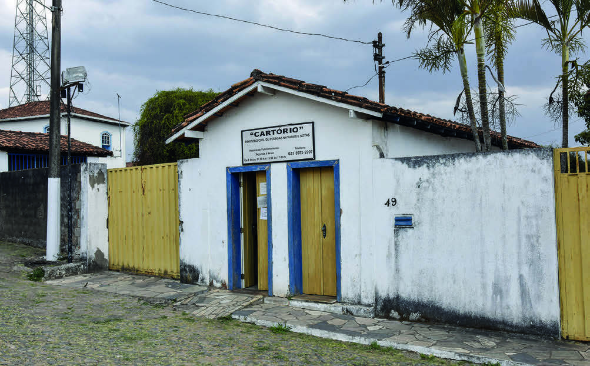

O NOME E A IDENTIDADE PESSOAL
NOSSO NOME É UM DOS ELEMENTOS QUE NOS DIFERENCIA DAS OUTRAS PESSOAS NA SOCIEDADE, E QUE NOS ACOMPANHA POR TODA A VIDA.
É POR MEIO DELE QUE NOS IDENTIFICAMOS.
O NOME É UM DIREITO RELACIONADO À DIGNIDADE HUMANA E DESEMPENHA UM PAPEL CENTRAL NA FORMAÇÃO DE QUEM SOMOS.
POR MEIO DELE, NÓS NOS APRESENTAMOS AO MUNDO E ESTABELECEMOS CONEXÕES COM OS OUTROS.
É IMPORTANTE FAZER O REGISTRO DO NOME EM CARTÓRIO, POIS ISSO CONFERE LEGALIDADE E RECONHECIMENTO OFICIAL À NOSSA IDENTIDADE.
ESSE PROCEDIMENTO NÃO APENAS VALIDA NOSSA EXISTÊNCIA PERANTE A SOCIEDADE, MAS TAMBÉM É ESSENCIAL PARA A OBTENÇÃO DE DOCUMENTOS E UMA PARTICIPAÇÃO PLENA NA VIDA EM COMUNIDADE.
ALÉM DA IDENTIFICAÇÃO PESSOAL, O NOME REFLETE A HISTÓRIA, A CULTURA E OS VALORES FAMILIARES DE CADA UM, CONTRIBUINDO PARA A CONSTRUÇÃO DE NOSSA SINGULARIDADE.
NO CONTEXTO DO DIREITO AO NOME SOCIAL, DESTACA-SE A OBRIGATORIEDADE, POR LEI, DO DIREITO DE USÁ-LO EM DIVERSOS AMBIENTES, COMO EM CASA, NA ESCOLA, NO TRABALHO, ENTRE OUTROS.
ESSE DIREITO É FUNDAMENTAL PARA QUE A IDENTIDADE DE GÊNERO DE CADA INDIVÍDUO SEJA RESPEITADA, RECONHECENDO E LEGITIMANDO A FORMA COMO CADA PESSOA ESCOLHE SER IDENTIFICADA.
AO ABORDAR O NOME SOCIAL, NÃO APENAS SE REFORÇA A NOÇÃO DE IDENTIDADE, MAS TAMBÉM SE CONTRIBUI PARA UM AMBIENTE MAIS INCLUSIVO E RESPEITOSO, ESPECIALMENTE PARA A COMUNIDADE LGBTQIAP+.
DESSA FORMA, FORTALECEMOS O ENTENDIMENTO DE QUE O DIREITO AO NOME VAI ALÉM DA FORMALIDADE LEGAL, SENDO UM ASPECTO ESSENCIAL PARA A AFIRMAÇÃO, A IDENTIDADE E A DIGNIDADE DE CADA SER HUMANO.
O não reconhecimento do nome social de uma pessoa pode se configurar crime, e o autor poderá sofrer penalidades.

CARTÓRIO DE REGISTRO CIVIL E NOTAS.
DISTRITO DE CACHOEIRA DO CAMPO, OURO PRETO, MINAS GERAIS, FOTOGRAFIA DE 2021.
João Prudente/Pulsar Imagens
Após a leitura do texto autoral e os debates propostos, é interessante enfatizar o direito a todos de ter o nome do pai na certidão de nascimento, assim como a possibilidade de alterar o nome, independentemente do motivo, a partir dos 18 anos.
Em relação ao último parágrafo do texto, informe que o não reconhecimento do nome social de uma pessoa pode configurar crime, e o autor pode sofrer penalidades.
Uma conversa sobre esse assunto poderá ser promovida entre os estudantes, ressaltando o reconhecimento e respeito às diferenças, incentivando uma cultura de paz.